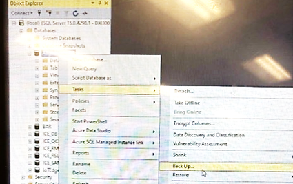
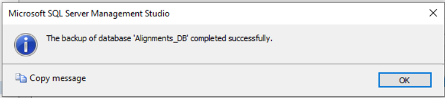
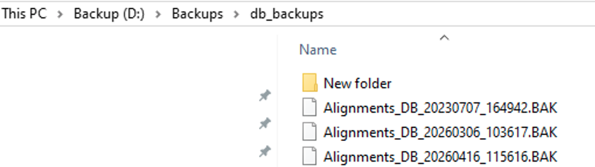

Backing Up the Databases Using Microsoft SQL Server Management Studio
This topic includes information about how to back up the databases using Microsoft SQL Server Management Studio.
Note: The primary method for backing up the databases is to use the Service App. See
Backing Up the Databases Using the Service App for more information.
- Connect to the databases. See Connecting to the Databases for more information.
- In the Object Explorer window, expand Databases. The object will include the following databases.
- ICE_DB
- ICE_QC_DB
- ICE_SAMPLES_DB
- ICE_RMS_DB
- Alignments_DB
- For each database, complete the following steps:
- Right-click the database and go to
to open the Back Up Database dialog.

- In the Back Up Database dialog, in the Destination section, select all destinations and select Remove.
- Select Add.
- In the File name box type the name of the database.
- Select OK.
- Select OK.
- Select OK.
- Select
OK. A notification will be displayed saying that the backup was completed successfully.

- Go to
D:\Backups\db_backups to confirm the backup saved successfully.

- Right-click the database and go to
to open the Back Up Database dialog.